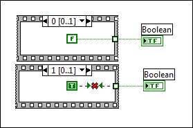

A Stacked Sequence structure on the block diagram has an output tunnel, but two or more frames contain a value wired to the output tunnel. If you wire two or more values to the same output tunnel, LabVIEW cannot determine which value to pass to the output tunnel after all frames of the Stacked Sequence structure execute. LabVIEW indicates this error by coloring the center of the output tunnel white, as shown in the following example.
To correct this error, decide which frame should pass a value to the output tunnel. Move to the frames that should not pass a value and remove the wires to the output tunnel in the those frames. When only one frame passes a value to the output tunnel, the tunnel is a solid color.